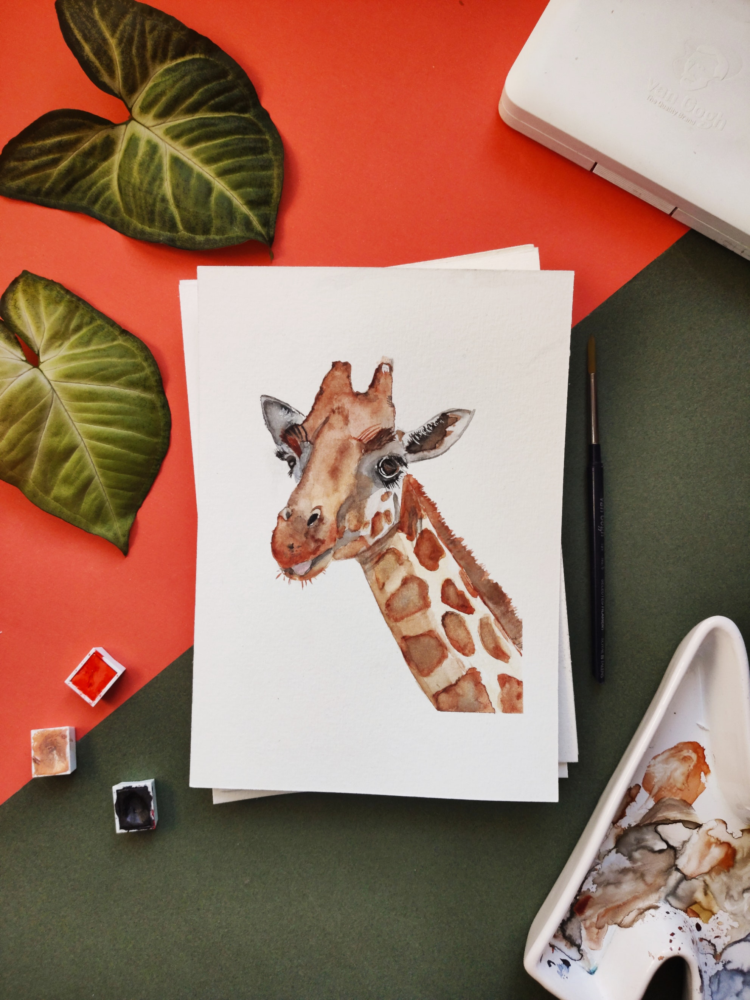

Imagen de Yaritza CidImagen de Jose SepulvedaImagen de Isabel OjedaImagen de Marco Ojeda
Nuestra galeria cuenta con obras principales de grandes autores de origen Chileno, donde toda persona podra disfrutar del arte precolombino, moderno, yuxtapos y Cubista